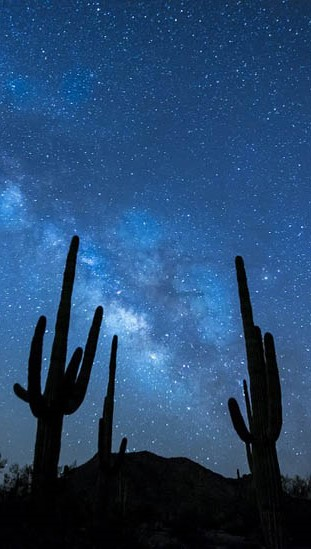

Biología en los paisajes de México
Es así que hoy en día el estudio de esta disciplina científica ha experimentado un gran renacimiento en México, ya que los biólogos son importantes para el desarrollo científico, económico y social de nuestro país, ya que son los encargados del estudio de los organismos y su relación con el medio ambiente. Hacen aportes a la Biomedicina, la biotecnología, la biología molecular, la biodiversidad, la educación ambiental, la nutrición y la ecología.